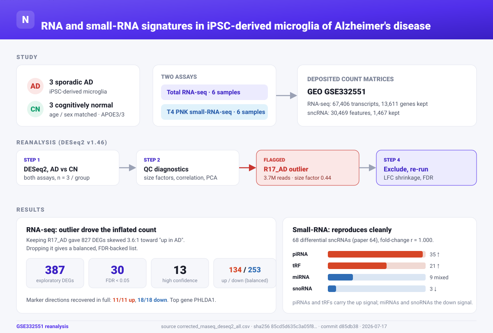
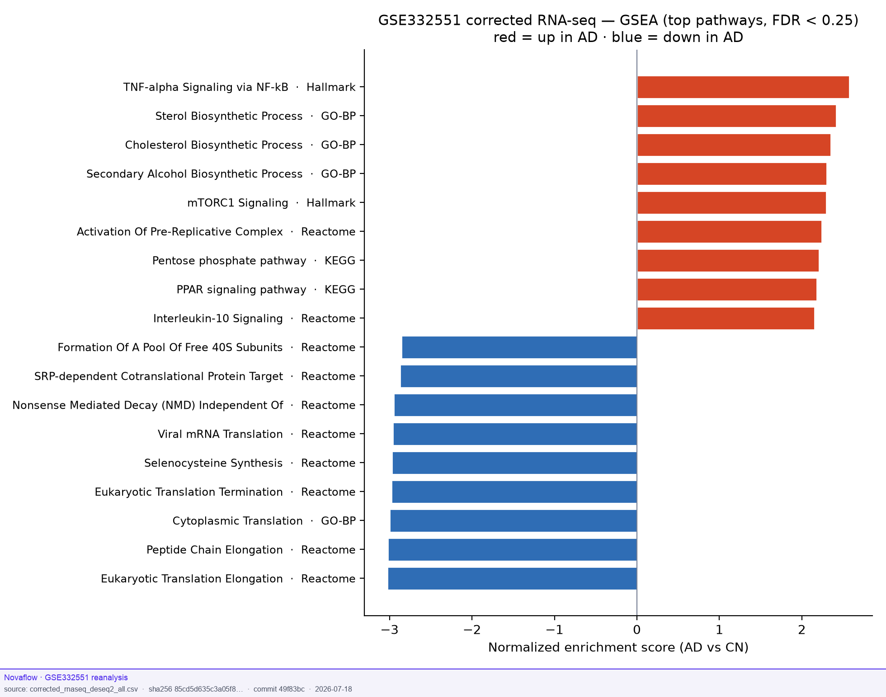
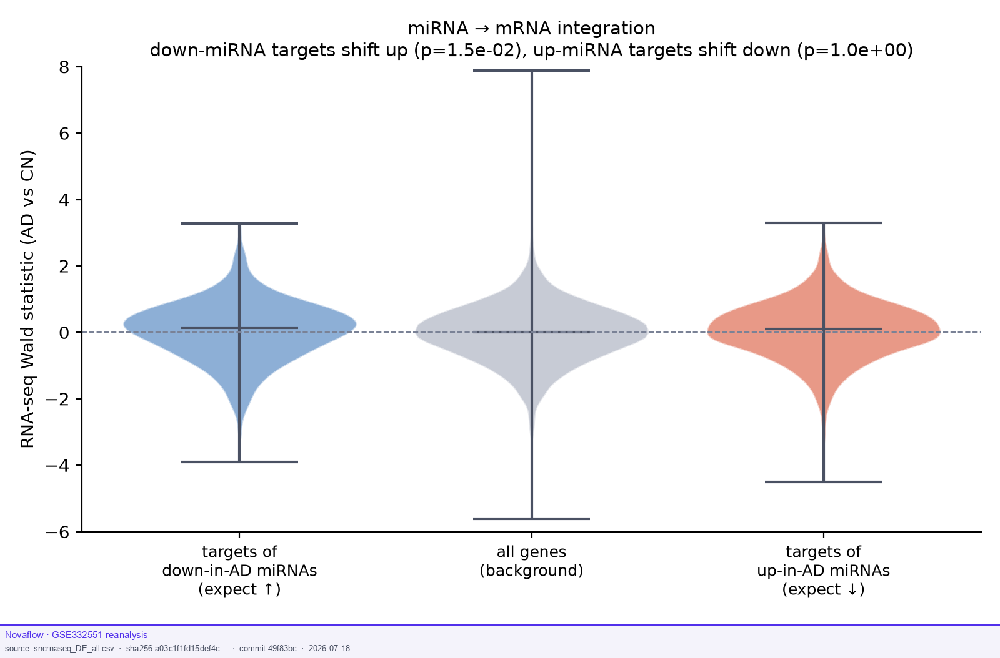
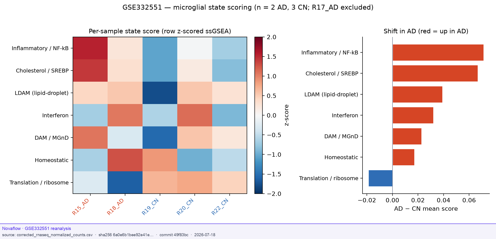
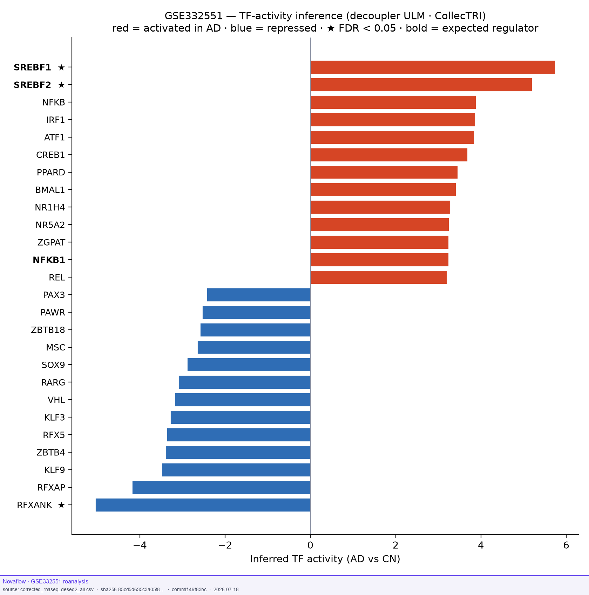

RNA and small-RNA signatures
in iPSC-derived microglia of Alzheimer's disease
An independent reanalysis of the deposited GEO count matrices from Wu, Choi, Liu et al. (Frontiers in Neuroscience, 2026). We ran DESeq2 on 3 sporadic AD versus 3 cognitively normal iMG across two assays, total RNA-seq and T4 PNK small-RNA-seq, to see how much of the reported result holds up and to give the DEG calls a firmer footing.
Graphical abstract
The whole project on one figure: inputs, the reanalysis steps, and what came out of each assay.

{kind=link}
{kind=link}
Abstract
What we tested, how we did it, and what held up.
The biology holds up. The small-RNA class shifts and the marker-gene directions both reproduce. What did not hold up was the RNA-seq DEG count, which is unstable at n = 3 and was inflated by one low-depth sample (R17_AD). Beyond reproduction, threshold-free pathway and regulator analyses point to an inflammatory, lipid-laden microglial state driven by SREBP.
Background. Alzheimer's disease (AD) reshapes microglial gene and small-RNA programs. The original study profiled iPSC-derived microglia-like cells (iMG) from 3 sporadic AD donors and 3 cognitively normal (CN) controls, matched for age and sex and all APOE3/3, using total RNA-seq and T4 PNK small-RNA-seq. We reanalyzed the deposited count matrices to check whether the reported differential expression reproduces from public data and to make the calls more robust.
Methods. We ran DESeq2 (v1.46) on both matrices (AD vs CN, n = 3 per group). RNA-seq transcript counts were collapsed to genes (13,611 kept at mean count ≥ 10). Small-RNA features were tested directly (1,467 kept at mean ≥ 5) and classified as piRNA, tRF, miRNA, or snoRNA. We added normalization checks (library size, size factors, correlation, PCA), applied log-fold-change shrinkage with FDR control, and re-ran the RNA-seq analysis with the outlier removed. For interpretation we ran preranked GSEA, ssGSEA microglial-state scoring, transcription-factor activity inference (decoupler / CollecTRI), and a miRNA-target integration against validated miRTarBase targets.
Results. The small-RNA results reproduced well. We found 68 differential sncRNAs (the paper reported 64), with a fold-change correlation of r = 1.000 and the same class pattern: piRNAs (35) and tRFs (21) up in AD, with miRNAs and snoRNAs mostly down. The RNA-seq results did not reproduce as cleanly. The deposited matrix gave 827 DEGs with a 3.6-to-1 skew toward "up in AD", and that skew traced back to one sample, R17_AD, which had 3.7 M reads, a size factor of 0.44, a genome-wide Spearman near 0.80 against roughly 0.95 for the others, and a lone position on PCA. Dropping R17_AD removed the skew (387 DEGs, 134 up and 253 down), raised the FDR-significant genes from 11 to 30, and left 13 high-confidence DEGs by FDR and shrunken fold-change, among them PHLDA1 up, SLC44A2 down, ALK up, and KCNQ3 down. Every named marker gene from the paper came back in the right direction (11 of 11 up, 18 of 18 down).
Downstream interpretation. Threshold-free GSEA (555 sets at FDR < 0.25) overlaps the paper on the translation/ribosome down-signal but adds up-signals it did not emphasize: neuroinflammation (TNF/NF-κB) and cholesterol/lipid biosynthesis. ssGSEA scores the AD cells toward inflammatory, cholesterol/SREBP and lipid-droplet (LDAM) states, and TF-activity inference attributes the lipid arm to significant SREBF1 (FDR 0.004) and SREBF2 (FDR 0.02) activation while independently recovering MHC class II (RFX complex) repression, which matches the paper's HLA-DR observation. Across the two assays, the targets of the down-in-AD miRNAs are coherently de-repressed in the transcriptome (pooled p = 0.015).
Conclusions. Work from an outlier-corrected, FDR-based DEG list, and lean on the signature-level read-outs (GSEA, state scoring, TF activity), which stay robust at this sample size; together they describe an inflammatory, lipid-laden microglial state driven by SREBP. The results, figures, scripts, and an interactive DEG table are all in this portal.
Overview
The study frame and the headline numbers from the corrected analysis, with R17_AD excluded.
The small-RNA class shifts and every named marker-gene direction reproduce from the public data. The RNA-seq DEG count did not. It was inflated and skewed by one low-depth sample, R17_AD. Once that sample is excluded, the analysis comes out balanced, FDR-backed, and defensible.
What's in this portal
- A project abstract and study frame
- The R17_AD outlier diagnosis & corrected DEG list
- An interactive DEG explorer you can filter by p, FDR, and |log2FC|
- Threshold-free pathway analysis (GSEA) and a miRNA → mRNA integration
- Small-RNA class breakdown (piRNA / tRF / miRNA / snoRNA)
- All figures, the 13 high-confidence genes, and every script
- One-click downloads of the result tables
Reproduction key finding
When we applied paper-like thresholds to the deposited RNA-seq matrix, we got far more DEGs than the paper reported, with a strong skew toward "up in AD". The cause turned out to be one sample, R17_AD. Excluding it brings back a balanced, FDR-backed list.
It has about half the library depth of any other sample (3.7 M against 8.4 to 15.2 M) and a DESeq2 size factor of 0.44, which scales its counts up roughly 2.3 times. Its genome-wide Spearman correlation to the other samples runs 0.77 to 0.82, where the others sit at 0.92 to 0.96, and on PCA it sits alone at PC1 +93 while the other five fall between −13 and −33. With only three samples per group, median-of-ratios normalization pushes its low counts up and manufactures "up in AD" genes, which is where the 3.6-to-1 skew comes from.
DEG counts across analyses
| Analysis | Total | Up in AD | Down in AD | Interpretation |
|---|---|---|---|---|
| Paper RNA-seq | 195 | 100 | 95 | Published nominal list |
| Original gene-level | 827 | 649 | 178 | Inflated, skewed by R17_AD |
| Transcript-level | 1382 | 1038 | 344 | Same skew, not gene collapsing |
| Corrected exploratory (R17 excluded) | 387 | 134 | 253 | Balanced; raw-p tier |
| Corrected high-confidence | 13 | 6 | 7 | FDR + shrunken FC tier |
Sample-level QC
| R17_AD library size | 3.7M (others 8.4–15.2M) |
| DESeq2 size factor | 0.44 |
| Spearman to others | 0.77–0.82 (others 0.92–0.96) |
| PCA position | PC1 +93 (others −13…−33) |
| Effect of excluding | skew removed · FDR 11→30 |
What reproduces cleanly
Marker-gene directions are fully recovered on the gene-level shrunken analysis:
- 11/11 paper "up in AD" genes correct (PHLDA1, BCL2A1, POU5F1, PRKCB, NR4A2/3, FOSL1, SLIT3, USP2, PLPP3, LILRA6)
- 18/18 paper "down in AD" genes correct (HTRA1, MELTF, KCNQ3, IGFBP3, TSPYL5, INPP5F, ECHDC3, CKB, ribosomal & histone clusters)
DEG explorer interactive
Corrected RNA-seq DESeq2 (R17_AD excluded, LFC-shrunk). Move the sliders to see how the DEG list changes with raw p, FDR (adjusted p), and |log2FC| cutoffs. Defaults (p ≤ 0.05, |log2FC| ≥ 0.8) reproduce the 387-DEG exploratory set. Table includes all genes with raw p < 0.20; click a column to sort. Each gene symbol opens its locus in the UCSC Genome Browser (hg38).
Small-RNA reproducible
The T4 PNK small-RNA analysis reproduces well. We found 68 differential sncRNAs (the paper reported 64), a fold-change correlation of r = 1.000, and the same class pattern the paper described.
Class breakdown (reanalysis)
| Class | Up in AD | Down in AD | Total |
|---|---|---|---|
| piRNA | 34 | 1 | 35 (51%) |
| tRF | 21 | 0 | 21 (31%) |
| miRNA | 4 | 5 | 9 (13%) |
| snoRNA | 0 | 3 | 3 (4%) |
Notable sncRNAs
| tRF5-Lys-CTT-6 | highest-count up tRF (log2FC ≈ +3.5) |
| hsa-piR-23444 | most up piRNA (log2FC ≈ +4.3) |
| SNORD123 | most down snoRNA (log2FC ≈ −5.1) |
| miR-143-3p / 145-5p / 181a-3p | AD-associated miRNAs, down |
piRNAs and tRFs dominate the up-in-AD signal; miRNAs and snoRNAs carry the down signal, the same pattern reported by the paper.
Pathways GSEA
Because a DEG list is unstable at n = 3, we ranked all 13,523 genes by their Wald statistic and ran preranked GSEA against Hallmark, GO-BP, Reactome, and KEGG. This is threshold-free, so it does not depend on any p-value cutoff. 555 gene sets are enriched at FDR < 0.25 (377 up, 178 down). They overlap the paper on the translation/ribosome down-signal but surface inflammation and cholesterol/lipid programs it did not emphasize; the paper's headline chromatin/exosome GO terms are not among our top hits. All without relying on the fragile DEG count.

Up in AD inflammation + lipid
- TNF-α signaling via NF-κB — NES +2.58 (Hallmark)
- Cholesterol / sterol biosynthesis — NES +2.42 (GO-BP)
- Inflammatory response — NES +2.14 (Hallmark)
- mTORC1 signaling — NES +2.30 (Hallmark)
- PPAR signaling — NES +2.18 (KEGG)
- Interleukin-10 signaling — NES +2.15 (Reactome)
Neuroinflammation plus microglial cholesterol/lipid dysregulation, both central to AD biology.
Down in AD translation
- Cytoplasmic translation — NES −3.00 (GO-BP)
- Peptide chain elongation — NES −3.02 (Reactome)
- Ribosome — NES −2.82 (KEGG)
- SRP-dependent cotranslational targeting — NES −2.87 (Reactome)
- Nonsense-mediated decay — NES −2.95 (Reactome)
A coordinated collapse of the translation / ribosome program — the strongest and most consistent signal, confirming the paper's ribosomal-downregulation theme threshold-free.
Integration miRNA → mRNA
The only genuinely cross-assay test the deposited data supports. If the differential miRNAs are functional, their targets should move the opposite way in the RNA-seq. We compared each miRNA's validated targets (miRTarBase) against the genome background in the RNA-seq Wald ranking.

Targets of the 5 down-in-AD miRNAs shift up in the transcriptome (pooled median +0.13, one-sided p = 0.015; all 5 concordant), with miR-224-3p (p = 0.027) and the paper's miR-145-5p (p = 0.043) individually significant. This ties the two assays into one mechanism: less miRNA, de-repressed targets.
Their targets do not shift down (pooled p = 1.0). Three of the four are broad let-7 / miR-20b family members with 600–1100 targets each, so the effect is likely diluted and, at n = 3, underpowered. Reported honestly rather than cherry-picked.
Per-miRNA target shift
| miRNA | miRNA dir | log2FC | Targets | Target median stat | Concordant | MWU p |
|---|---|---|---|---|---|---|
| miR-224-3p | down in AD | −3.61 | 106 | +0.188 | ✓ | 0.027 |
| miR-145-5p | down in AD | −2.29 | 206 | +0.089 | ✓ | 0.043 |
| miR-181a-3p | down in AD | −2.42 | 9 | +0.285 | ✓ | 0.138 |
| miR-362-5p | down in AD | −2.63 | 52 | +0.021 | ✓ | 0.374 |
| miR-361-3p | down in AD | −2.51 | 110 | +0.183 | ✓ | 0.446 |
| miR-4286 | up in AD | +2.90 | 98 | −0.017 | ✓ | 0.357 |
| miR-20b-5p | up in AD | +4.90 | 837 | +0.101 | ✕ | 0.995 |
| let-7b-5p | up in AD | +2.62 | 1110 | +0.056 | ✕ | 0.999 |
| miR-7977 | up in AD | +2.78 | 594 | +0.181 | ✕ | 1.000 |
Microglial state & regulators new
The pathway results say what changed; these two analyses say which state the cells moved toward and which regulators drive it. Both are signature-level, so they are far more stable at n = 5 than per-gene tests.
The AD iMG score higher on inflammatory (NF-κB), cholesterol/SREBP, and lipid-droplet (LDAM) programs and lower on translation, and TF inference pins the lipid arm on a statistically significant activation of SREBF1/2. Independently, the RFX complex (MHC class II) is significantly repressed — matching the paper's reported HLA-DR reduction, recovered here straight from the transcriptome.


Key inferred regulators (AD vs CN)
| TF | Activity | FDR | Direction | Programme |
|---|---|---|---|---|
| SREBF1 | +5.75 | 3.8e−03 | activated | cholesterol / lipid biosynthesis |
| SREBF2 | +5.20 | 2.0e−02 | activated | cholesterol / sterol biosynthesis |
| NFKB1 / REL | +3.2 | ns | activated | inflammation (directional) |
| IRF1 | +3.87 | ns | activated | interferon / inflammation |
| PPARD | +3.46 | ns | activated | lipid metabolism |
| RFXANK | −5.05 | 2.0e−02 | repressed | MHC class II (↓ HLA-DR) |
| RFXAP / RFX5 | −4.2 | borderline | repressed | MHC class II |
At n = 3 per group only SREBF1, SREBF2 and RFXANK clear FDR < 0.05; the inflammatory regulators are directionally consistent but underpowered. Reported with that caveat rather than overstated.
Figures
Generated from the corrected (R17-excluded, shrunken-LFC, FDR) analysis. Click any figure to open full-size.
{kind=link}
{kind=link}
High-confidence genes
The 13 genes passing FDR < 0.05 with meaningful shrunken fold-change in the corrected analysis. Filter by symbol or direction; click a column to sort. Each gene symbol opens its locus in the UCSC Genome Browser (hg38).
Pipeline & scripts
Every step of the reanalysis, in run order. Press View code below (or </> Code in the top bar) to open any script in a VSCode-style editor. R scripts use DESeq2 1.46; Python scripts use pandas / matplotlib / scipy.
Analysis scripts
Downloads
The full PDF report, the project abstract, and the corrected result tables. Scripts are in the section above.
shasum -a 256 -c)